Part 1 - Overview
What ConflabCode is
ConflabCode puts two AI coding agents, Claude Code and Codex, on the same project at the same time, with you directing. Here is what that means in practice:
Two agents in the same conversation, not two sessions passing notes. Claude and Codex sit in the room together, trained differently, so they catch different mistakes the way a single agent working alone would not. Talk to both at once, or target one directly by clicking its window, naming it by name in your message, or locking a target with a right click. Whatever one agent says, the other sees on the next round, clearly marked as context to be aware of, not an instruction to follow.
Context that manages itself. Normally, you watch context usage and save it yourself before you hit the wall. On ConflabCode, nobody watches the gauge. Set a threshold per model, a lower percentage for a huge context window where context rot and higher cost creep in, a higher percentage for a smaller one, and when that threshold is hit, ConflabCode promotes a fresh agent instance and hands off the history invisibly. You stop thinking about context entirely.
Flexible enough to match how you actually work. Say "move this button seven pixels right" and the lead just does it, no ceremony required, with review always one click away. For a handful of loose objectives, free form mode runs them through design review, implementation, and verification automatically, with a single click.
Real cross-review, enforced by the stages themselves. For even more structure, brainstorm, design, implementation, verification, every stage lets you assign a lead and a reviewer, and you can swap roles at each stage, so Claude designs and Codex builds, then Claude reviews the code Codex just wrote. The stage itself makes sure of it.
Provenance that survives every handoff. Design items trace back to the brainstorm notes and rounds that produced them. Implementation traces back to design. Verification checks against all of it. At every stage, the reviewer isn't just checking whether the agent did what it said it would do, it's checking against your original intent, with an actual link back to where that intent came from. The more detail you give it, the sharper the result, thin notes still get you thin results, and the structure is there for you to take advantage of.
One click to reach consensus. It orients both agents on the same page, each catching what the other missed, and merges their input into a consolidated opinion you can act on. Neither agent holds the whole picture alone, so pooling what each one sees, even from the same context, catches more than either would catch working solo.
Built to run more than one pair of agents at once. Run up to ten ConflabCode instances at the same time, more than enough for any situation. Additionally, ConflabCode provides shiny new tools to replace the agents' original ones. Every mistake an agent makes normally costs a round trip to the provider, and that adds up fast. Each trip re-sends a full copy of context, costing time and money. ConflabCode's tools catch and retry the errors, self-correcting until it actually works. Things like quoting mistakes, wrong paths, and edits that need another pass all get fixed automatically.
Behavior Policy and Rules you control. Behavior Policy describes what it means to be the lead agent or the reviewer, and tells the agent what is expected in that role for each stage, and it comes with sensible presets already in place. A global set of Rules ships with the product, edit them or add your own, project Rules are entirely up to you to define, they shape how the agents work with you, your own preferences for how they respond and interact. Edit either carefully, your changes replace the defaults rather than layering on top, so a careless edit can change how a stage functions. A full reset always brings you back to the defaults.
In practice. What you see: the opening Overview explains the shared workspace, the two-agent model, and the next required setup step. Why it matters: it gives you a safe orientation point before a task or provider session is running.
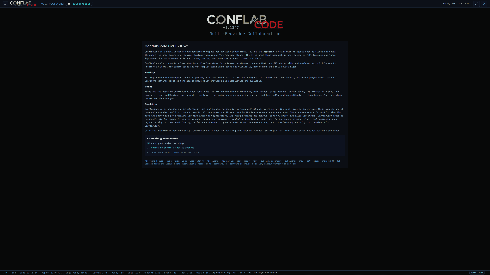
The mental model
A workspace is a folder on disk. Everything ConflabCode knows about a project, every task, every conversation, every stage, lives under that one folder.
A workspace holds tasks, and a task is the unit of work. It remembers everything: the full conversation, the round by round history, which objectives are done, which stage it's in. Open a task, close it, come back later, and it picks up exactly where you left it.
Inside a task, work happens one of two ways. Loosely, in Freeform, where you just talk and things get done. Or through four named stages in order: Brainstorm, Design, Implementation, Verification.
Two agents work every task, always. Each one is either Claude Code or Codex, and depending on the stage, either one can be Lead or Reviewer. The roles swap. The agents don't.
You are the Director. That's the human in the room, and in every task, that's you. You can talk to one agent, talk to both at once, or, where the current stage supports it, let an AI Director draft and send on its own.
Whatever one agent does, the other sees it on its next turn. Not as an instruction to follow, just as context to be aware of. That's the mechanical heart of the whole tool: same conversation, not two sessions passing notes.
What to expect from agents
Before you trust anything else in this guide, it's worth being honest about what ConflabCode changes and what it doesn't.
Two agents catching each other's mistakes lowers the error rate. It doesn't zero it out. Review and Incorporate are real gates, but in Freeform they're gates you can decline to use, and even inside a structured stage, a Reviewer's approval is a judgment call, not a guarantee.
You still have to read what an agent claims it did. The tool gives you evidence, the record, the tool log, the diff, instead of asking you to take an agent's word for it. Somebody still has to look at the evidence. That somebody is you.
Structure adds dependability. It doesn't add control. If you tell an agent to do something destructive, the stage machinery doesn't stop it. The permission dialogs are what stand between you and that, and only for the operations they actually cover.
One working rule worth stating plainly. Review and Incorporate are offers, not requirements. If the work already looks right, skip Review and move on. If a Reviewer flags something not worth acting on, don't Incorporate it. The buttons make your judgment easier to act on. They are not a substitute for it.
Platforms and agents
ConflabCode is an Electron desktop app validated for routine use on Windows and macOS. Packaging artifacts may exist for other platforms, but this guide does not present Linux as a validated daily-use platform.
Two agent providers are supported and tested today: Claude Code and Codex, each through its own native runtime integration. Put the same provider in both seats, and ConflabCode warns you rather than blocking you, in case that's actually what you want.
A task needs two active provider seats to run at all. Unlike M-PACT, where a single agent is an optional, lighter weight way to work, ConflabCode isn't built around a one agent shape. Two agents is the whole idea.
Part 2 - Getting set up
Getting set up is three separate things: pick a workspace, tell ConflabCode which providers you're using, and create your first task. None of it takes long.
Launching ConflabCode and picking a workspace
The first time you launch ConflabCode, you'll see a splash screen, then a folder picker, unless you launched with a specific path or a recent workspace already in hand, in which case ConflabCode drops you straight into it.
The folder picker gives you breadcrumbs, root shortcuts, Go Up and Home buttons, a toggle for hidden files, and a Recent row along the bottom showing your last several workspaces.
Each Recent entry shows, in parentheses, whether that workspace is already open somewhere else, and in which task, or "None" if it's open with no task picked yet. Click a Recent entry that's open in another window, and ConflabCode asks first: switch this window to it, open a brand new window, or cancel.
Opening a brand new folder as a workspace initializes it right there. The first Save Settings creates the workspace's .ConflabCode folder. Save stays disabled until ConflabCode has found both the Claude Code and Codex CLIs and an AI Helper is selected; a red note under the button lists whatever is still missing.
In practice. What you do: browse to a project folder, choose a recent workspace, or start a new one. What you see: open workspaces carry their live task state in the Recent row. Result: the chosen folder becomes the boundary for task history and workspace settings.
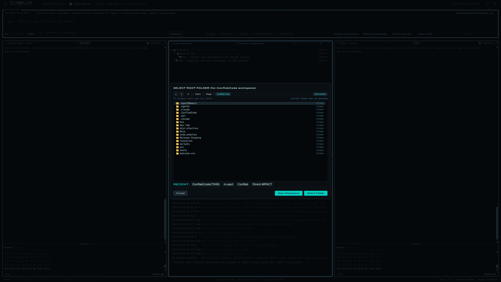
Provider credentials and the essentials
In Settings, Provider Credentials handles both agents. ConflabCode auto detects each agent's CLI path, with a manual override if it guesses wrong. Each provider gets its own subscription versus API key toggle, and a Launch Login button for the ones that need it.
Separately, AI Helper has its own provider, model, effort, and speed settings. This isn't a third agent you talk to. It's what powers summaries, rule checks, and a handful of other background jobs behind the scenes.
Most of the rest of Settings is routine enough that it doesn't need its own teaching space here. Part 10 covers it as a reference list.
In practice. What you do: confirm the detected CLI for each provider, choose subscription login or API-key mode, and configure the AI Helper separately. What you see: provider choices and helper settings stay in one sidebar but serve different jobs. Result: both agent seats and the background helper are ready without treating the helper as a third conversational agent.
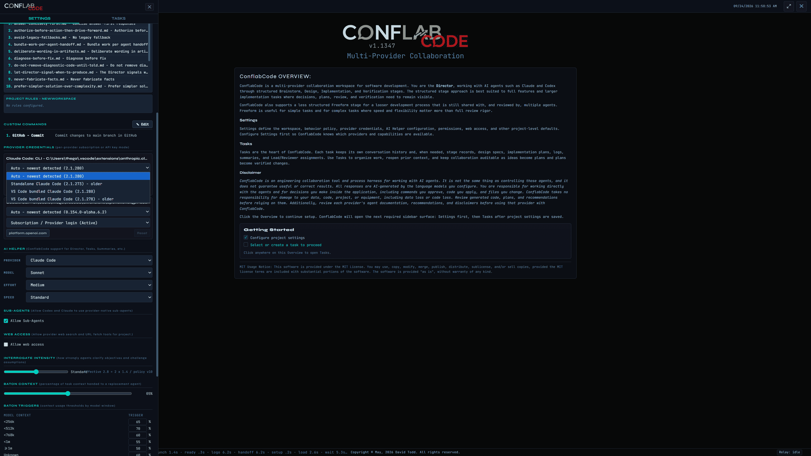
Creating your first task
Right click the Tasks root for two options: Add Category or Add Task. Categories are optional folders. Tasks can live at the root or inside one, and you can drag them in and out later.
The Task Editor asks for a name and a description of the objective. Save commits the task without leaving the editor. Go launches the actual working view. A trash can deletes the task, and a lock icon closes it.
A brand new task defaults to Human Director, Freeform stage, free form mode, and two agent windows on your workspace's default providers. You don't have to configure anything to get moving. Name it, describe it, hit Go.
In practice. What you do: give the task a durable name and objective, then choose Save to keep editing or Go to enter the working view. What you see: the task number and open/closed control stay with the editor. Result: the task becomes the persistent container for the conversation and stage records.
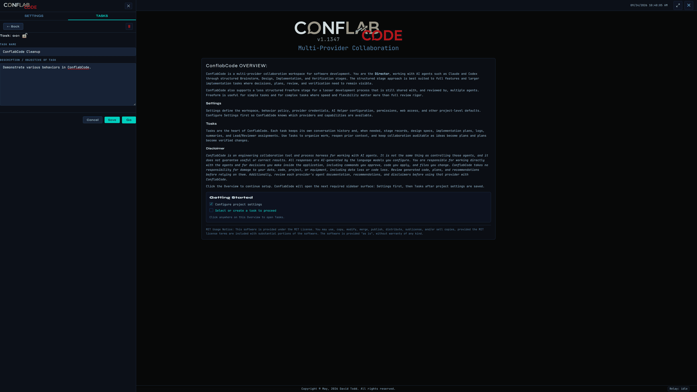
Part 3 - Two agents in the same conversation, not two sessions passing notes
This is the core interaction model everything else in this guide sits on top of. It's worth understanding well before the rest of the guide starts assuming you know it.
The Director panel and composer
Across the top of a task's working view sits the Director panel: your last message, an input field, a paperclip for attachments, a Human and AI Director toggle, and a counter showing how many objectives are selected versus remaining.
Enter sends your message. Shift+Enter starts a new line without sending.
Human Director means you're the one typing. AI Director means ConflabCode drafts and sends on its own. That toggle only becomes selectable when the current stage or objective is something an AI Director is actually equipped to drive. Otherwise it stays inactive, so you can't accidentally hand control to it somewhere it doesn't know what to do.
Targeting an agent
Click one agent's pane to target just that agent. Double click to target both. Right click to lock the target, so it stays set across messages instead of resetting each round.
A locked, targeted agent shows a green TARGETED label with a lock icon, so you can see at a glance who's listening.
You can also override targeting without touching the mouse. Name an agent in your message, by its name, by provider, by slot number, or by role, Lead or Reviewer, and that one message routes to the named agent regardless of what's locked. This is how you run two different instructions through a locked both agents session without ever clicking anything.
In practice. What you do: click one pane, double-click for both, or right-click to lock both. What you see: TARGETED labels and a short gesture tooltip confirm the routing state. Result: your next message goes only to the intended seat unless you override it by naming an agent or role.
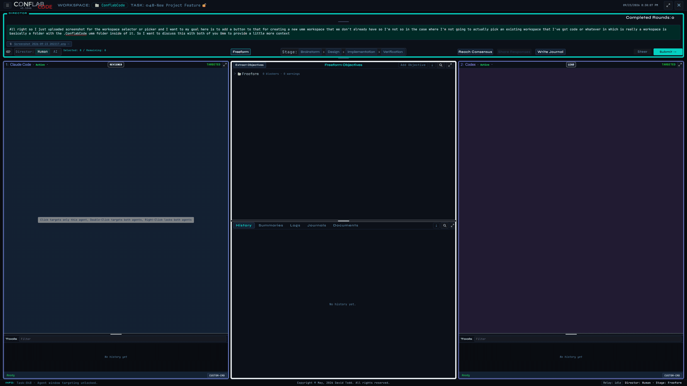
What each agent sees of the other
Whatever one agent says or does, the other sees it on its next round. Not as an instruction to follow, but as context to be aware of, clearly marked as such.
This is the mechanical difference between ConflabCode and two separate chat sessions pointed at the same code. Say something in one agent's window in a plain chat tool, and the other agent has no idea it happened unless you copy it over yourself. Here, it's automatic.
Steer and Interrupt
Outside AI Director mode, Submit queues Director Input for the selected busy agents. When any selected agent is busy, Steer becomes available as the more immediate option.
Clicking Steer opens a confirmation naming the affected agents and injects the new instruction into work already in progress. If both selected agents are busy, the dialog can steer both. If one has completed and the other is still busy, it can steer the busy agent and queue the completed one; queuing both remains available.
The red Stop or Interrupt control is the blunter option: instead of steering or queuing the round, it stops active work outright.
When an agent stalls
If an agent goes idle mid turn past a timeout, a stalled turn watchdog fires. It allows one automatic continue on its own, and if that doesn't resolve things, it asks you directly: continue, wait, or cancel. Part 12 has the fuller troubleshooting picture.
Part 4 - Tasks
Tasks are foundational the way they are in M-PACT. This Part covers the mechanics: organizing them, their lifecycle, and finding your way back to one.
Organizing tasks
Categories are folders in the task tree. Add one by right clicking, and drag tasks in and out of them freely. Sort by number or by name.
A locked padlock icon marks a closed task. It's a soft signal, a "you probably don't need to reopen this" note to yourself, not an enforced block. Nothing stops you from reopening a locked task if you need to.
In practice. What you see: categories can nest, tasks can stay at the root, and closed tasks are dimmed with a padlock. Why it matters: the icon and dimming communicate lifecycle state without preventing you from reopening the work.
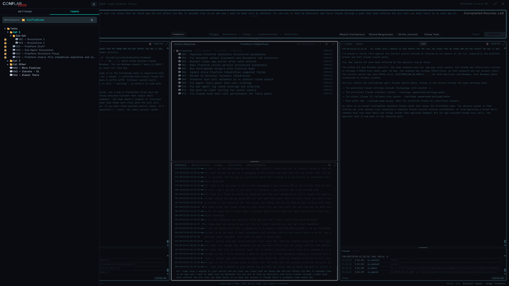
The task lifecycle
A single click opens the Task Editor. Go resumes exactly where the task left off: the full conversation, the round count, and which objectives are done, all intact.
Close Task is available from the lock control beside the focused task name and from the top-level Close Task control. Locked means closed. Clicking the locked control later reopens the task.
Closing runs a verification checkpoint, packages loose or unzipped task assets into an archive, and releases the native agent sessions behind the task.
Reopening surfaces whatever was still open when it closed, but it doesn't put any of it back into play automatically. The first thing you say after reopening should identify what's active again. Reopened tasks remain flexible: you can return to Brainstorm or another stage and add Freeform objectives, design items, implementation items, or other new work as the project evolves.
A task already open in another window shows a red, read only marker, and ConflabCode won't let you open it a second time. A different task in the same workspace, opened from another window, is fine.
Finding things again
Project Search covers the whole workspace: a cross task keyword search, a scope tree to narrow where it looks, filters by stage and by record type, whole word mode, and results grouped so you're not scrolling through a flat list.
Part 5 - Flexible enough to match how you actually work
Freeform: no ceremony required
Say "move this button seven pixels right," and the Lead just does it. No stage to pick first, no objective to write down. Review is always one click away when you want it, and never required when you don't.
The Review and Incorporate loop
When the Lead finishes a piece of work, a Review badge appears on its pane. Click it, and the Reviewer looks the work over.
If the Reviewer flags something, an Incorporate button appears on the Lead's pane. Click it, and the finding gets handed back for a fix.
After the fix, a new Review badge appears, and the cycle repeats until the Reviewer has nothing left to flag, or until you decide not to chase it any further.
Both buttons are optional, and that's deliberate. Skip Review if the work already looks right to you. Decline to Incorporate a flagged concern that isn't worth acting on. This is different from a structured stage, covered next, where review isn't something you can just skip.
In practice. What you do: wait for the Lead to finish, select Review, then use Incorporate only when you want the Lead to act on the finding. What you see: the yellow Review badge appears on completed work. Result: review stays available without turning every small Freeform change into mandatory ceremony.
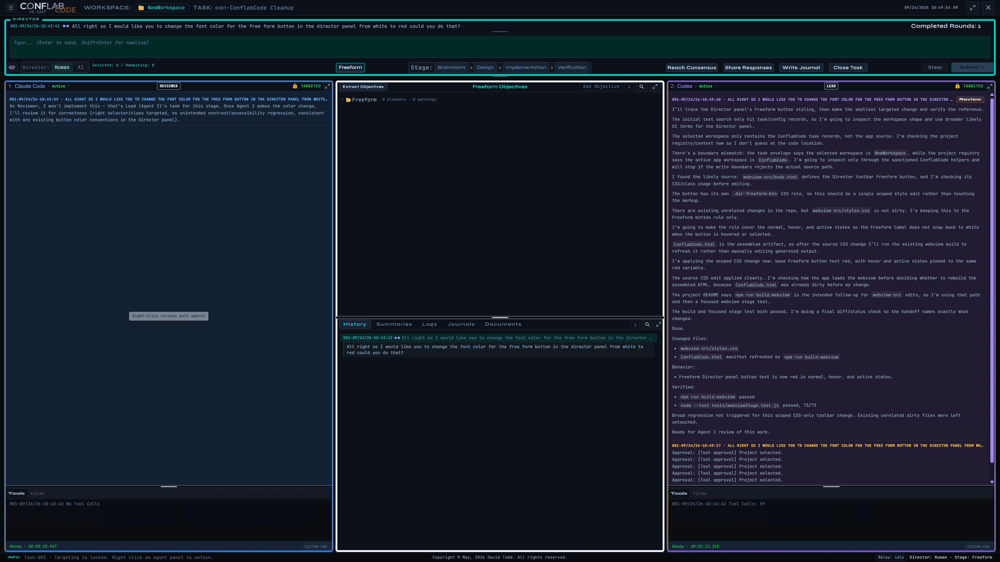
Freeform Objectives
For a handful of loose objectives, the Freeform Objectives tree runs them through design, implementation, and verification automatically, with a single click.
It works the same way the task list does: categories, drag and drop, search hit badges. Each objective expands in place to show its full round by round history.
Archived objectives are read only, kept for reference rather than further work.
In practice. What you do: select an objective or an entire category. What you see: parent selection cascades into nested objectives and the Director counter updates. Result: a small batch can move through design, implementation, and verification together while each objective keeps its own history.
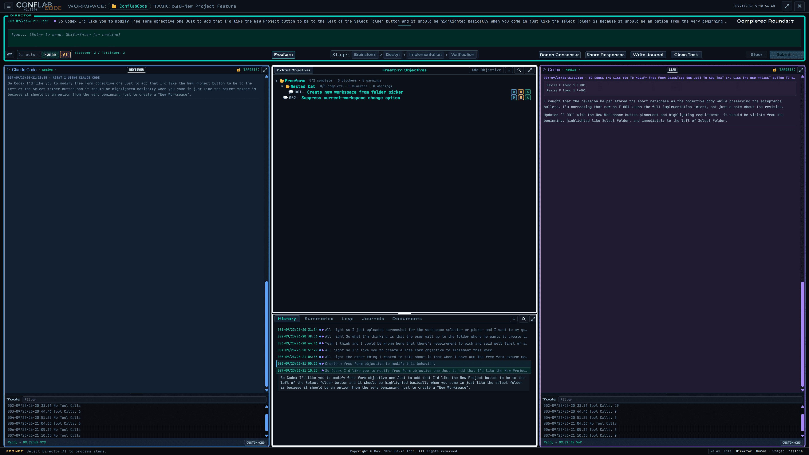
Part 6 - Real cross-review, enforced by the stages, and the provenance behind it
The four structured stages
Structured work moves through four stages, in order: Brainstorm, Design, Implementation, Verification.
Every stage lets you assign a Lead and a Reviewer, and you can swap those roles at each stage. Claude designing while Codex builds is one shape. Claude then reviewing the code Codex just wrote is the same two agents, one stage later, different seats.
Design cannot advance to Implementation until every design item is approved by both agents. Selecting Implementation activates Import Design; importing turns the accepted design into a sliced Implementation Plan and begins the implementation pass.
Verification remains unavailable until implementation completes. Selecting it activates Import Implementation, which creates the Verification Plan and starts the same automatic pass. Control returns to Human before AI work resumes, keeping the stage transition visible and interruptible.
In practice. What you do: move through Brainstorm, Design, Implementation, and Verification, assigning the Lead at each stage. What you see: imported source material becomes named, reviewable items in the center plan. Result: the work is divided into explicit records that the opposite seat can approve, question, or block.

Provenance across stages
Design items trace back to the brainstorm notes and rounds that produced them. Implementation traces back to design. Verification checks against all of it.
At every stage, the Reviewer isn't just checking whether the agent did what it said it would do. It's checking against your original intent, with an actual link back to where that intent came from.
The more detail you give a stage going in, the sharper the result coming out. Thin notes get thin results. The structure is there to use, not a substitute for using it.
In practice. What you see: expanding an item reveals its source design reference, approval events, later touches, responsible agent, and round. Why it matters: a Reviewer can trace the current implementation back to the intent that created it instead of reviewing only the latest summary.
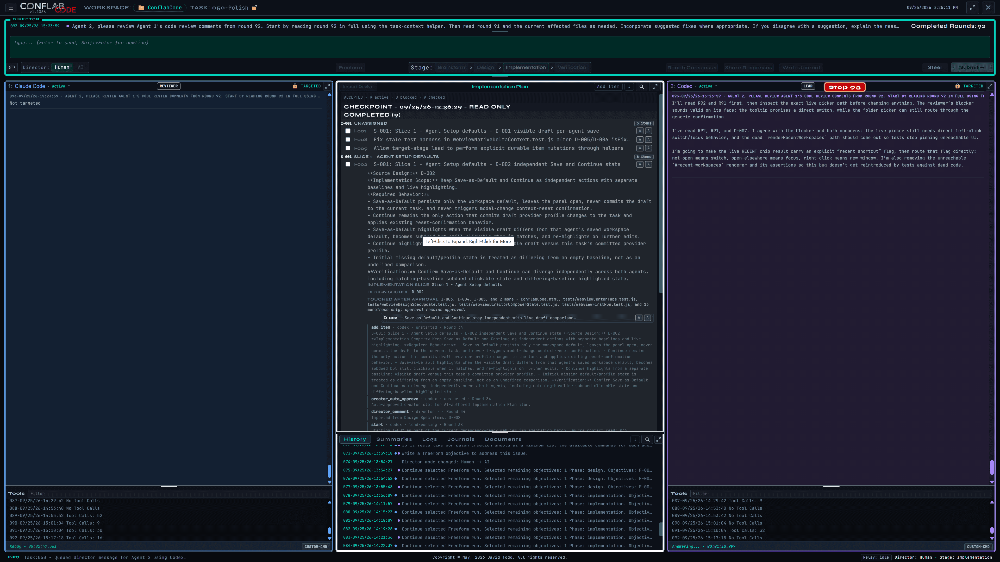
Part 7 - One click to reach consensus
Reach Consensus
Reach Consensus launches a small automated AI Director process that has both agents compare and reconcile their positions into one agreed result you can act on.
It runs for up to ten rounds, with a Stop Consensus control if you want out before it finishes on its own. The agreed result can then become a Brainstorm note, Freeform objective, design items, or another durable work artifact.
In practice. What you do: start Reach Consensus when two useful positions need reconciliation. What you see: each iteration is recorded in History alongside ordinary rounds and one-pass Share Responses. Result: the merged conclusion remains part of the task record instead of disappearing into a separate chat.
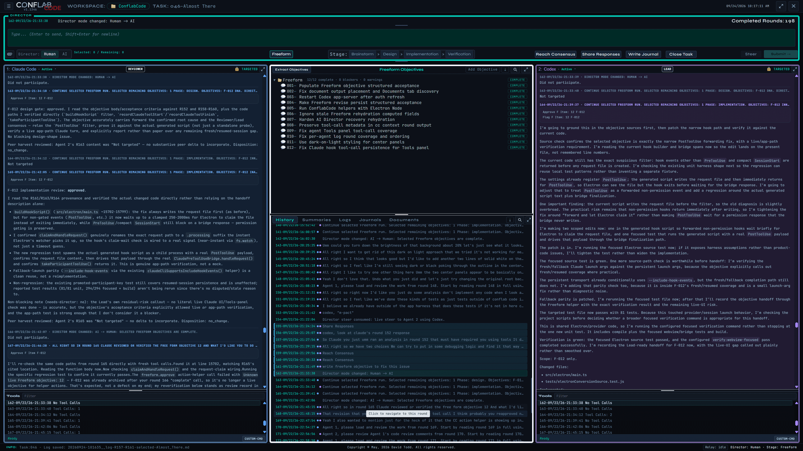
Share Responses
Share Responses is the simpler sibling. It is one comparison pass: each agent considers the other agent's immediately preceding response, with no iterative merge. Add Director Input first when you want to frame what they should compare; leave it blank when the previous responses speak for themselves.
Part 8 - Context that manages itself
The baton, in plain terms
Normally, you watch context usage yourself and save your own work before you hit the wall. ConflabCode is designed to make that management largely invisible.
Each model has a context threshold expressed as a percentage. Near that threshold, the current agent prepares a curated context baton and ConflabCode pre-warms a successor. Handoff waits for a suitable pause so active work is not interrupted, then the successor continues from the baton.
In practice. What you see: a baton transition appears in the task status line while the visible objective and history stay in place. Result: the provider session changes underneath the task without turning the handoff into a new task or a manual copy-and-paste step.
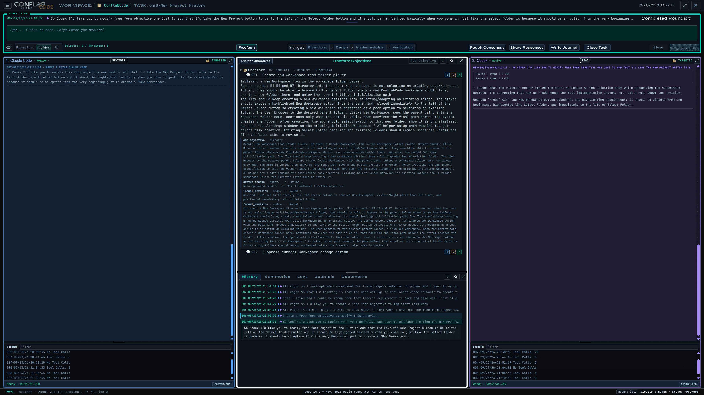
Tuning the thresholds
Baton Context percent and Baton Trigger thresholds live in Settings, one per model context window.
A lower percentage suits a huge context window, where context rot and rising cost creep in well before the window is full. A higher percentage suits a smaller one, where you'd rather use more of what you have. Setting the threshold too high risks the provider's hard context limit and automatic compaction; the baton still supports continuity, but the recovery usually costs more tokens. The defaults are intended to keep this machinery out of your way.
In practice. What you do: set the overall Baton Context percentage and the trigger for each model-window range. What you see: those controls sit beside provider, helper, access, and display settings. Result: the replacement point can reflect the model’s usable context rather than waiting for a hard limit.
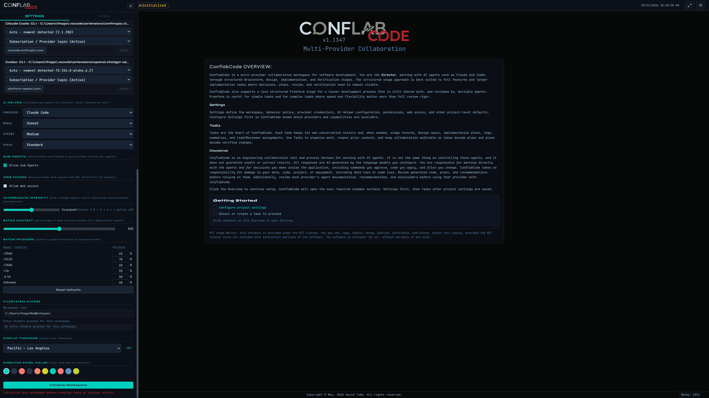
Part 9 - Built to run more than one pair of agents at once
Multiple workspaces, multiple windows
Run up to ten ConflabCode instances at once. New Window spawns a window on a workspace of your choosing, and the Recent row always shows what's open where, so you know which window points at which workspace and which task.
A per task lease stops two windows from opening the same task at the same time. A different task in the same workspace, from another window, is fine.
Opening the same workspace twice needs an explicit risk acknowledgment. Two windows editing the same task tree at once is a real conflict, not just an inconvenience, and ConflabCode wants you to know that before you do it.
In practice. What you see: the workspace picker shown earlier carries the open-window and current-task signal in its Recent row. Result: you can distinguish a safe new window or different task from a conflicting second editor before opening it.
Tools that fix their own mistakes
ConflabCode replaces the agents' own built in tools with its own. Normally, every mistake an agent makes costs a round trip to the provider, resending a full copy of context each time, which costs both time and money.
ConflabCode's tools catch and retry errors instead. Quoting mistakes, wrong paths, edits that need another pass, all get fixed automatically, before they ever become a round trip.
Part 10 - Behavior Policy and Rules you control
Behavior Policy
Behavior Policy describes what it means to be the Lead agent or the Reviewer, and what's expected in that role, for each stage. It ships with sensible presets already in place.
Edit carefully. Changes replace the defaults rather than layering on top of them, so a careless edit can change how a stage functions. A full reset always brings you back to the defaults.
In practice. What you do: edit global behavior or the role-and-stage-specific expectations, then save the replacement policy. What you see: Reset, Cancel, and Save remain visible around the editable rule set. Result: the operating definition is explicit and recoverable, but it should be changed as a complete policy rather than as an assumed overlay.

Rules
A global set of Rules ships with the product. Project Rules are entirely yours to define, and they shape how the agents work with you specifically, your own preferences for how they respond and interact.
The same caution applies as with Behavior Policy. Edits replace, they don't layer, and the same reset is available if you need it.
The rest of Settings, briefly
| Setting | What it does |
|---|---|
| Custom Commands | Up to 20 slots, each with a name, a body, and a Claude and Codex visibility checkbox. A command starting with a semicolon runs as a shell command stream. Stored per install, not per workspace. |
| Sub-Agents and Web Access | On by default. Simple toggles to turn either off. |
| Interrogate Intensity | Controls the frequency and depth of clarification questions during Brainstorm, Freeform, and design work. Medium is the practical default; higher settings ask for more detail without following an exact deterministic formula. Requesters offer selectable answers plus an optional Director-written response. |
| Filesystem Access, Display Timezone, Director panel color | Cosmetic, or narrow enough not to need separate explanation. |
Part 11 - Everything else the tool keeps for you
The bottom center tabs
History lists every round, numbered and timestamped, with agent dots, a one line summary, and navigation back into the Director thread or a specific agent pane.
Summaries and Logs give you four scopes: Full, Selected, Up To Here, Down From Here. Summaries are AI Helper's condensed version. Logs are verbatim exports.
Journals are global, above the project and task hierarchy. Entries are not tied to one project or task, even when their content discusses either. Create as many as you need for project notes, task observations, interesting material, daily records, or anything else worth preserving; saved entries can be searched and exported.
Documents holds task result files, with Markdown and HTML export, and printing.
In practice. What you do: switch among History, Summaries, Logs, Journals, and Documents without leaving the task. What you see: a saved document expands in place and can be exported. Result: durable outputs stay discoverable after their original transcript links have scrolled out of view.
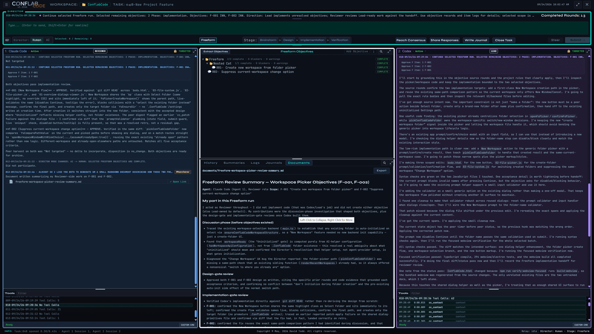
Results and artifacts
A result is detected automatically. An explicit artifact pointer, a flagged native write, a markdown write, or a mentioned document path all count.
Supported types are md, markdown, txt, csv, json, and html.
The Results tree mirrors the task tree, though in practice you'll reach it through Documents and the per agent artifact cards more often than through a dedicated navigation tab.
Part 12 - Putting it together
A real Freeform and AI Director run
This real task begins as a human-led product discussion, turns that discussion into two durable Freeform objectives, and then hands the selected work to the AI Director for design, implementation, and verification. Expand a round to read the original exchange; opening another round closes the one you were reading.
Round 1Define the New Workspace flow
Director
09/23/26 20:31:54Codex
Agent 2 · 09/23/26 20:32:15Claude Code
Agent 1 · 09/23/26 20:33:47Round 2Set creation and initialization behavior
Director
09/23/26 20:38:36Claude Code
Agent 1 · 09/23/26 20:39:25Codex
Agent 2 · 09/23/26 20:39:56Round 3Confirm workspace readiness requirements
Director
09/23/26 20:44:46Codex
Agent 2 · 09/23/26 20:45:35Claude Code
Agent 1 · 09/23/26 20:45:45Round 4Create the first Freeform objective
Director
09/23/26 20:51:29Claude Code
Agent 1 · 09/23/26 20:51:42Codex
Agent 2 · 09/23/26 20:52:59Codex
Agent 2 · 09/23/26 20:52:35Round 5Identify the current-workspace selection issue
Director
09/23/26 21:04:33Codex
Agent 2 · 09/23/26 21:04:48Claude Code
Agent 1 · 09/23/26 21:05:20Round 6Create the second Freeform objective
Director
09/23/26 21:05:35Claude Code
Agent 1 · 09/23/26 21:05:38Codex
Agent 2 · 09/23/26 21:06:04Codex
Agent 2 · 09/23/26 21:05:58Round 7Refine button placement and emphasis
Director
09/23/26 21:10:35Codex
Agent 2 · 09/23/26 21:12:10Codex
Agent 2 · 09/23/26 21:11:07Codex
Agent 2 · 09/23/26 21:12:05Round 8Start the AI Director run
Director (AI)
09/24/26 09:19:38Claude Code
Agent 1 · 09/24/26 09:19:38Codex
Agent 2 · 09/24/26 09:19:38Round 9Approve the objective designs
Director (AI)
09/24/26 09:19:39Codex
Agent 2 · 09/24/26 09:19:39Claude Code
Agent 1 · 09/24/26 09:20:35Round 10Implement both objectives
Director (AI)
09/24/26 09:20:36Claude Code
Agent 1 · 09/24/26 09:20:36Codex
Agent 2 · 09/24/26 09:29:04Round 11Review and approve the implementation
Director (AI)
09/24/26 09:29:05Codex
Agent 2 · 09/24/26 09:29:05Claude Code
Agent 1 · 09/24/26 09:31:12Round 12Return control with the run complete
Director (AI)
09/24/26 09:31:12Claude Code
Agent 1 · 09/24/26 09:31:12Codex
Agent 2 · 09/24/26 09:31:12The progression is the useful part: rounds 1–7 turn a real conversation into reviewable objectives, round 8 hands control to the AI Director, rounds 9–11 gate and execute the work, and round 12 returns control with both objectives complete.
A three-round Reach Consensus example
This real three-round sequence starts with a diagnosis-only request, uses Reach Consensus to reconcile the findings, and then authorizes the smallest fix.
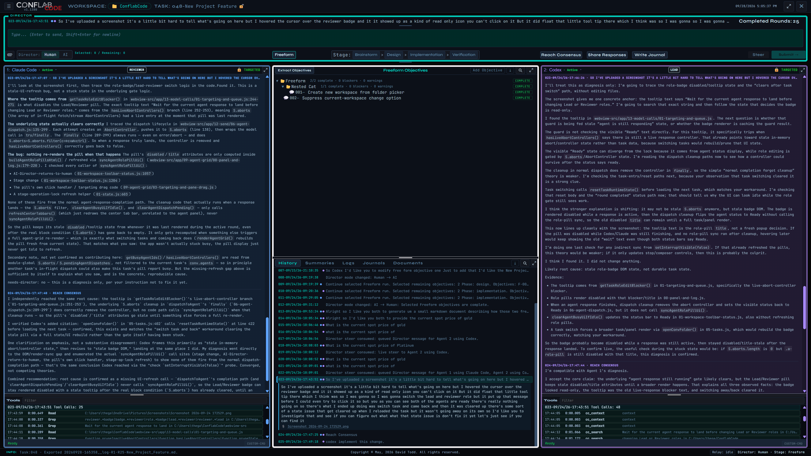
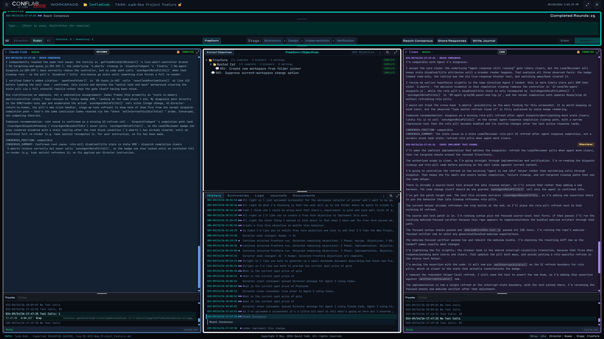
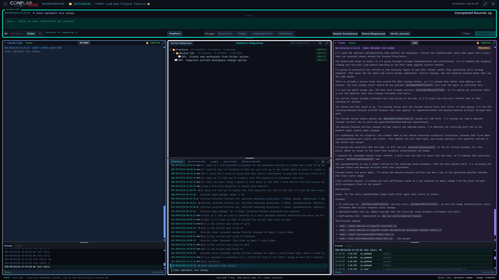
When something goes wrong
| Problem | What to do |
|---|---|
| A same-provider warning appears. | It's a warning, not a block. ConflabCode still lets you run both seats on the same provider if that's actually what you want. |
| An agent stalls mid-turn. | The stalled-turn watchdog allows one automatic continue. If that doesn't resolve it, you're asked directly: continue, wait, or cancel. |
| A tool approval gets denied. | Each scope, from a single turn up through the whole system, grants a different amount of trust. Choose the narrowest one that still lets the work proceed. |
| A task is already open elsewhere. | A red, read-only marker appears, and ConflabCode won't let you open it a second time. This is per task, not per workspace, so a different task in the same workspace opens fine from another window. |
| A task's model has been deprecated or is otherwise unavailable. | ConflabCode follows the standard recovery path across providers: it reopens or presents the model picker so you can choose a current model, then continue. |
| Reach Consensus hits its iteration cap. | It stops at ten rounds without forcing a resolution. Use Stop Consensus if you'd rather end it earlier, or restate the disagreement more specifically and try again. |
| You close a task with things still open. | Closing records what was still open at the time. Reopening surfaces that list, but doesn't reactivate any of it. Say what's active again before you continue. |